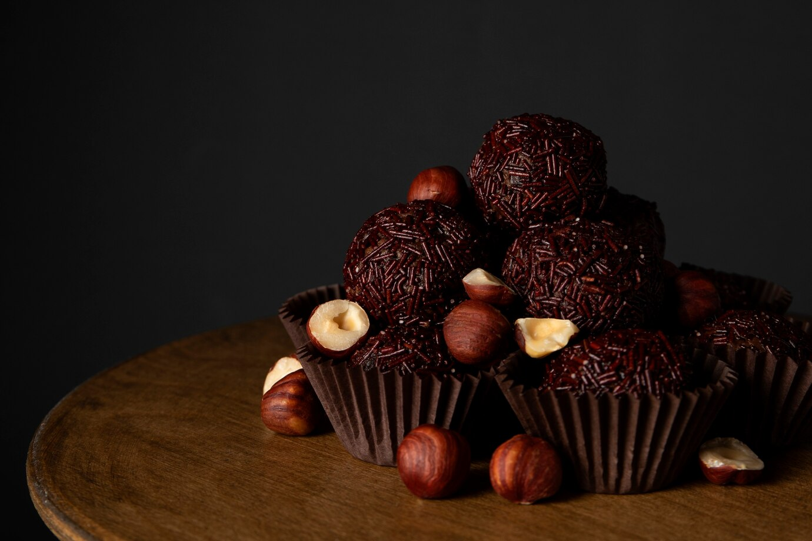

Brigadeiro

Brigadeiro is a beloved Brazilian sweet treat that has a special place in many hearts.
It’s a type of chocolate truffle that’s incredibly simple to make but absolutely delicious.
Principals Ingredients
- 1 can (14 oz) sweetened condensed milk
- 3 tablespoons unsweetened cocoa powder
- 1 tablespoon butter
- Chocolate sprinkles (for coating)
Principal Way To Do Brigadeiro
- In a saucepan, combine the sweetened condensed milk, cocoa powder, and butter.
- Cook over medium heat, stirring constantly, until the mixture thickens and starts to pull away from the sides of the pan (about 10 minutes)
- Remove from heat and let it cool slightly.
- Grease your hands with butter, then shape the mixture into small balls.
- Roll the balls in chocolate sprinkles to coat them.
- Place the brigadeiros in mini paper cups and serve.
Home